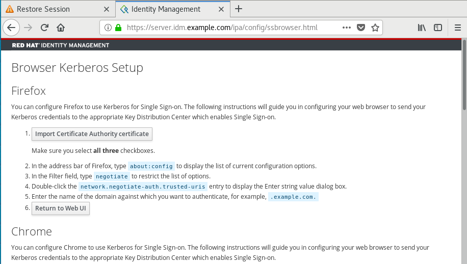
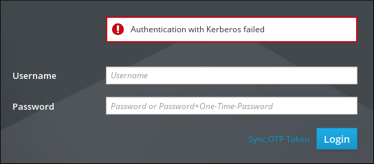

The following sections describe the initial configuration of your environment to enable Kerberos login to the IdM Web UI and accessing IdM using Kerberos authentication.
Installed IdM server in your network environment
For details, see Installing Identity Management in Red Hat Enterprise Linux 8
Identity Management (IdM) uses the Kerberos protocol to support single sign-on. Single sign-on authentication allows you to provide the correct user name and password only once, and you can then access Identity Management services without the system prompting for credentials again.
The IdM server provides Kerberos authentication immediately after the installation if the DNS and certificate settings have been configured properly. For details, see Installing Identity Management.
To use Kerberos authentication on hosts, install:
the IdM client
For details, see Preparing the system for Identity Management client installation.
- the krb5conf package
This procedure describes using the kinit utility to authenticate to an Identity Management (IdM) environment manually. The kinit utility obtains and caches a Kerberos ticket-granting ticket (TGT) on behalf of an IdM user.
Note
Only use this procedure if you have destroyed your initial Kerberos TGT or if it has expired. As an IdM user, when logging onto your local machine you are also automatically logging in to IdM. This means that after logging in, you are not required to use the kinit utility to access IdM resources.
Procedure
To log in to IdM
under the user name of the user who is currently logged in on the local system, use kinit without specifying a user name. For example, if you are logged in as
example_useron the local system:[example_user@server ~]$ kinit Password for example_user@EXAMPLE.COM: [example_user@server ~]$If the user name of the local user does not match any user entry in IdM, the authentication attempt fails:
[example_user@server ~]$ kinit kinit: Client 'example_user@EXAMPLE.COM' not found in Kerberos database while getting initial credentialsusing a Kerberos principal that does not correspond to your local user name, pass the required user name to the
kinitutility. For example, to log in as theadminuser:[example_user@server ~]$ kinit admin Password for admin@EXAMPLE.COM: [example_user@server ~]$
Optionally, to verify that the login was successful, use the klist utility to display the cached TGT. In the following example, the cache contains a ticket for the
example_userprincipal, which means that on this particular host, onlyexample_useris currently allowed to access IdM services:$ klist Ticket cache: KEYRING:persistent:0:0 Default principal: example_user@EXAMPLE.COM Valid starting Expires Service principal 11/10/2019 08:35:45 11/10/2019 18:35:45 krbtgt/EXAMPLE.COM@EXAMPLE.COM
To enable authentication with a Kerberos ticket, you may need a browser configuration.
The following steps help you to support Kerberos negotiation for accessing the IdM domain.
Each browser supports Kerberos in a different way and needs different set up. The IdM Web UI includes guidelines for the following browsers:
- Firefox
- Chrome
Procedure
- Open the IdM Web UI login dialog in your web browser.
Click the link for browser configuration on the Web UI login screen.

Follow the steps on the configuration page.

After the setup, turn back to the IdM Web UI and click Log in.
This procedure describes logging in to the IdM Web UI using a Kerberos ticket-granting ticket (TGT).
The TGT expires at a predefined time. The default time interval is 24 hours and you can change it in the IdM Web UI.
After the time interval expires, you need to renew the ticket:
- Using the kinit command.
- Using IdM login credentials in the Web UI login dialog.
Procedure
Open the IdM Web UI.
If Kerberos authentication works correctly and you have a valid ticket, you will be automatically authenticated and the Web UI opens.
If the ticket is expired, it is necessary to authenticate yourself with credentials first. However, next time the IdM Web UI will open automatically without opening the login dialog.
If you see an error message
Authentication with Kerberos failed, verify that your browser is configured for Kerberos authentication. See the section called “Configuring the browser for Kerberos authentication”.
This section describes how to configure an external system so that Identity Management (IdM) users can log in to IdM from the external system using their Kerberos credentials.
Enabling Kerberos authentication on external systems is especially useful when your infrastructure includes multiple realms or overlapping domains. It is also useful if the system has not been enrolled into any IdM domain through ipa-client-install.
To enable Kerberos authentication to IdM from a system that is not a member of the IdM domain, define an IdM-specific Kerberos configuration file on the external system.
Prerequisites
The
krb5-workstationpackage is installed on the external system.To find out whether the package is installed, use the following CLI command:
# yum list installed krb5-workstation Installed Packages krb5-workstation.x86_64 1.16.1-19.el8 @BaseOS
Procedure
Copy the
/etc/krb5.conffile from the IdM server to the external system. For example:# scp /etc/krb5.conf root@externalsystem.example.com:/etc/krb5_ipa.confWarning
Do not overwrite the existing
krb5.conffile on the external system.On the external system, set the terminal session to use the copied IdM Kerberos configuration file:
$ export KRB5_CONFIG=/etc/krb5_ipa.confThe
KRB5_CONFIGvariable exists only temporarily until you log out. To prevent this loss, export the variable with a different file name.-
Copy the Kerberos configuration snippets from the
/etc/krb5.conf.d/directory to the external system. - Configure the browser on the external system, as described in the section called “Configuring the browser for Kerberos authentication”.
Users on the external system can now use the kinit utility to authenticate against the IdM server.